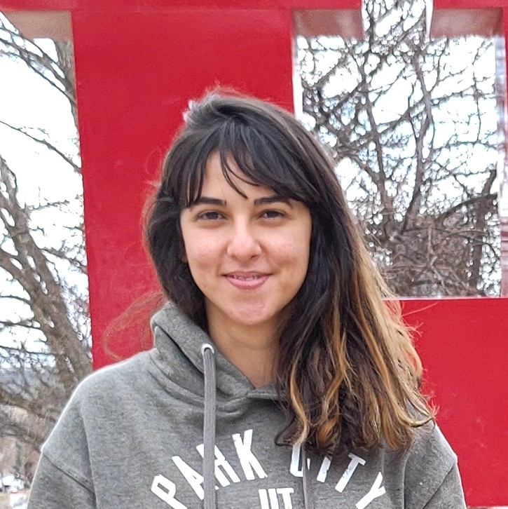

Welcome!
 I earned my Ph.D in Computer Science in 2021 from Perpignan university for developing a novel tool for recommending the optimal precision choice in numerical programs. Check out my research, publications, my teaching and my contact information using the links above.
News:
- Our paper "Accurate Floating-Point Cancellation Detection in Numerical Simulations" is accepted at XLOOP 2022 co-located with SC22.
Brief Biography:
| August 2022: | Invited researcher at the university of Utah, School of Computing. |
| 2021-2022: | ATER at Perpignan university, France. |
| 2018-2021: | PhD candidate at Perpignan University, France. |
| 2017-2018: | Master degree in High Performance Computing and Simulation from Perpignan University and Sousse university (ISITCOM), Tunisia. |
| 2016-2017: | Master of Research degree in distributed computing from Sousse university (ISITCOM), Tunisia. |
| 2013-2016: | Bachelor degree in fundamental computer science from Sousse university (ESSTHS), Tunisia. |